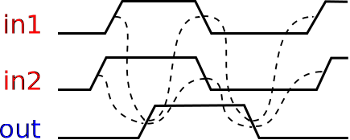
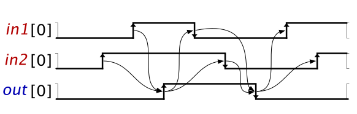
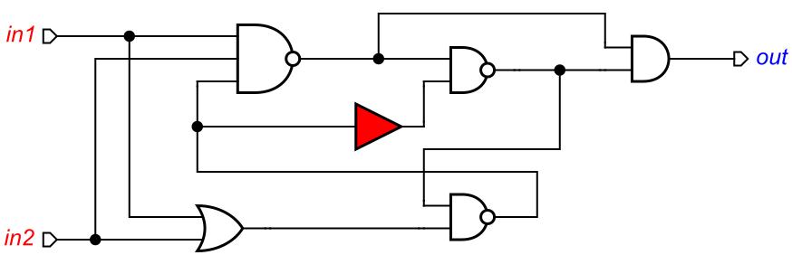

Table of Contents
Design of C-element
C-element is a latch that synchronises the phases of its inputs. A symbol for a 2-input C-element and its timing diagram are shown in the figures below. Initially all the signals are in the low state. When both inputs in1 and in2 go high, the output out also switches to logical 1. It stays in this state until both inputs go low, at which stage the output switches to logical 0.

Note that the output of C-element is not fully determined by its inputs: When the inputs have different values the output keeps its previous value, i.e. it can be either 0 or 1. That is, C-element is not a combinational gate, but a latch with internal memory.
Modelling
Let us model the C-element behaviour using the Signal Transition Graph (STG) formalism. Create a new STG work and translate the sequence of events in the timing diagram into a sequence of STG transitions. Basically you need to create a signal transition for each event of the timing diagram and capture the causality between these events by means of directed arcs between signal transitions. Recreate the following STG model in Workcraft.
![[T] Signal Transition](../../../help/stg/editor_tools-signal_transition.png "[T] Signal Transition") . Pay attention to the hint at the bottom of the screen:
. Pay attention to the hint at the bottom of the screen:
") and
and ") buttons or the conventional keyboard shortcuts.
buttons or the conventional keyboard shortcuts.


The resulting STG should look as follows; save it as celement.stg.work – this file will be used later on to verify C-element circuit implementations.

Validation and verification of specification
Activate the simulation tool ![[M] Simulate](../../../help/core/editor_tools-simulate.png "[M] Simulate") and exercise the obtained STG model. Click one of the enabled signal transitions (they are highlighted in orange) to fire (or execute) it, which changes the state (or marking) of the STG. Note that the sequence of fired transitions is recorded in the simulation trace that is somewhat similar to the original timing diagram. Check that the simulation traces correspond to the intended behaviour of C-element.
and exercise the obtained STG model. Click one of the enabled signal transitions (they are highlighted in orange) to fire (or execute) it, which changes the state (or marking) of the STG. Note that the sequence of fired transitions is recorded in the simulation trace that is somewhat similar to the original timing diagram. Check that the simulation traces correspond to the intended behaviour of C-element.
For example, simulate the following trace in2+, in1+, out+, in1-, in2-, out-, in1+, in2+ – you can copy this trace to clipboard and paste it in simulation tool by pressing  . Then use the generator of trace diagram
. Then use the generator of trace diagram  to convert the STG simulation trace to Digital Timing Diagram model. The produced timing diagram should resemble the initial informal specification and looks as follows (0 or 1 in brackets next to the signal name denotes its initial state).
to convert the STG simulation trace to Digital Timing Diagram model. The produced timing diagram should resemble the initial informal specification and looks as follows (0 or 1 in brackets next to the signal name denotes its initial state).

The visibility and color of signals in the generated timing diagram are defined in Visible and Color columns of the signal state table, at the bottom of Tool controls for STG simulation tool. The order of signal waveforms is also defined in this table by rearranging (drag-and-drop) the signal rows.
The timing diagram is built for the main simulation trace – Trace column. If the Trace is empty then the timing diagram generator will suggest to use Branch simulation results instead.
Before proceeding to the synthesis of the C-element it is a good idea to verify that its specification meets essential requirements, e.g. that it is consistent, free from deadlocks, input-proper and output-persistent. These properties can be checked via the Verification menu (see standard verification properties for details). Note that it is possible to check these properties either separately or jointly with a single click.
If the specification violates any of these properties then a trace leading to the problematic state will be reported. This trace can be simulated for better understanding the reported issues and for correcting them in the specification.
Synthesis
The STG specification can now be synthesised into an asynchronous circuit implementation either with MPSat or Petrify back-end tools via Synthesis menu.
A complex-gate implementation obtained with Petrify (Synthesis→Complex gate [Petrify] menu item) appears in the Output panel in Verilog format towards the end and is as follows: (Note that you may get a slightly different synthesis results.)
module Untitled_net (in1, in2, out); input in1; input in2; output out; assign out = (in1 & in2) | out & (in2 | in1); // Initial state: // !in1 !in2 !out endmodule
Workcraft automatically derives a circuit from the synthesis output. This feature is enabled by default and can be disabled by unticking the Open non-visual models (imported or converted) checkbox in the Edit→Preferences… window under the Common→Editor section.
Circuit capturing
For the purposes of this exercise let us capture (a slightly modified) C-element schematics manually.
By opening the parenthesis one can re-write the equation for signal out as follows:
assign out = (in1 & in2) | (in1 & out) | (in2 & out);
This equation is directly implementable by an AND-OR complex gate computing the function Z = A*B + C*D + E*F, called AO222 in the default gate library shipped with Workcraft. Create a new Digital Circuit work and capture this C-element implementation manually.
- Activate functional generator
![[F] Function](../../../help/circuit/editor_tools-function.png "[F] Function") and click in the desired position of the AND-OR complex gate.
and click in the desired position of the AND-OR complex gate.
- Activate selection tool
![[S] Select](../../../help/core/editor_tools-select.png "[S] Select") .
.
- Select the only pin of the newly created function component.
- In the Property editor change the Name of the pin to
Zand modify its Set function toA*B+C*D+E*F.

- Activate port generator . Pay attention to the hint at the bottom of the screen: Click to create an output port (hold Shift for input port).
- Click in intended location of the output port. Note that by default the port will be named
out0- you can change this name tooutlater. - Hold Shift and click in the desired locations of the input ports – they will be automatically assigned the names
in0andin1. - Switch to the selection tool, choose the output port, and change its Name to
outin the Property editor.. - We also need to change the name of an input port. Let us use another Workcraft editor feature for this – double-click on the port
in0and rename it toin2in place.

- Activate connection tool
![[C] Connect](../../../help/core/editor_tools-connect.png "[C] Connect") .
.
- Connect input ports
in1to the 1st and 5th pins of the complex gate (AandErespectively). - Connect input ports
in2to the 2nd and 3rd pins of the complex gate (BandCrespectively). - Connect the output pin of the gate to the output port
outand to the 4th and 6th inputs of the gate (DandFrespectively).

Optional simplification
You may wish to make the circuit schematic more readable by adding joints. Use the following editor features to tidy up C-element schematic:
- If you start a connection from a wire then a joint will be automatically inserted.
- If a primary input port or a gate output pin has several outgoing wires, then a joint can be detached from them by right-clicking the port or pin and selecting Detach joint in the popup menu. (Several joints can be detached in one go via Transformation→Detach joint (selected or all) menu.)
- To dissolve a joint, moving all the connections to the driving gate output or input pin, right-click on it and select Dissolve joint in the popup-menu. (Several joints can be dissolved in one go via Transformation→Dissolve joint (selected or all) menu.)
The improved C-element layout should look as follows:

A similar result can be achieved by using Workcraft automatic wire routing via Tools→Graph layout→Circuit routing only.
Verification of implementation
Activate the simulation tool and simulate the captured complex gate implementation of the C-element. Ports, pins and wires are colour-coded: blue means low level and red means high level of the signal. Excited ports and gates are highlighted in orange.
Click one of the excited ports or gates to toggle its logical value. Similar to the STG simulation, the sequence of signal events is recorded in the simulation trace and can be subsequently replayed for analysing the circuit's behaviour or converted to a timing diagram for visualisation purpose.
To conduct formal verification the circuit has to be converted into an STG. Normally this is done silently by the tool, but it is possible to view the intermediate circuit-STG via Conversion→Signal Transition Graph. The resulting STG for this circuit is shown below. Note that your layout may be slightly different and that this STG will not be required in the rest of the tutorial.

Note that if the C-element's inputs are not restricted in any way then they can change in an unexpected manner and cause malfunction of the circuit. This can be confirmed by checking the circuit for output persistency Verification→Output persistency [MPSat] – the tool will warn you that the circuit is being verified without no environment STG and produce the following violation traces:

This indicates that output out exhibits non-persistent behaviour. Indeed, after the trace in2+, in1+ the output out is excited and ready to switch to logical 1, however either in1- or in2- would disable it. Play one of the reported traces to simulate this unexpected behaviour.
The STG specification contains some information that is not available in the circuit, namely the behaviour of the environment. The circuit is guaranteed to work correctly only in an environment that respects its contract specified by the original STG. In other environments the circuit may exhibit non-persistency, deadlocks, etc. Therefore, during formal verification of the circuit one has to restrict its environment in such a way that the circuit only receives those inputs that are allowed by the STG specification.
The circuit behaviour can be restricted by an environment STG as follows:
- In the circuit editor make sure that no components are selected (click on the editor canvas).
- In the property editor choose the Environment property and select the work file with the original STG specification – the celement.stg.work file.
Repeat the verification procedure to check that assuming a well behaved environment the circuit is output persistent, deadlock-free and conforms to the environment specification. All these verification steps can be performed simultaneously via Verification→Conformation, deadlock freeness, and output persistency (reuse unfolding) [MPSat].
Decomposed implementation
Large gates like AO222 may not be available in the technology library and thus other implementations of C-element using smaller gates are of interest. However, it is very easy to make a mistake when designing asynchronous circuits, and so any such implementation has to be formally verified against the original STG specification.
When verifying the circuits provided in this section make sure their environment STG is specified and points to a correct C-element specification. This STG file is assumed to be called celement.stg.work, but may be saved under a different name on your computer.
Download the following C-element implementation due to Mayevsky celement-decomposed.circuit.work (4 KiB) and verify that it conforms to the STG specification, is free from deadlocks, input-proper, and output persistent.

Note that the correctness of this implementation depends on the isochronic forks assumption: the difference in arrival times of a signal to the ends of a wire fork is negligible compared to any gate delay. If this assumption is violated, the above implementation can exhibit non-persistent behaviour. Download the following C-element implementation celement-decomposed-hazard.circuit.work (4 KiB) where a delay in a wire fork is made explicit (modelled by a buffer). Formally verify this model, inspect the violation trace, and explain what is going wrong in the circuit.

Solutions
Download all the Workcraft models discussed in this tutorial here:
C-element models (24 KiB)
===== Feedback =====
- As discussed in https://www.dokuwiki.org/plugin:include#controlling_header_size_in_included_pages, by default, the headers in included pages start one level lower than the last header in the current page. This can be tweaked by adding an empty header above the include:\\
====== ====== {{page>:tutorial:feedback&inline}} - For offline help generation the content of
feedbackpage should be temporary wrapped in<WRAP hide>. Note that the headers still propagate to the table of contents even if inside the hidden wrap. Therefore the Feedback title needs to be converted to something else, e.g. to code by adding two spaces in front.